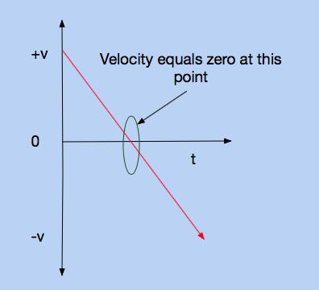
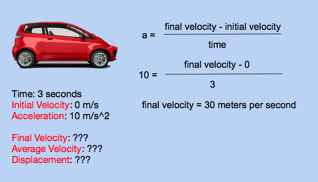
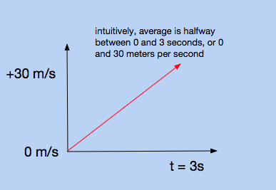
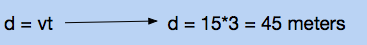

We've learned that displacement is the distance from the starting point to the ending point. We've learned that velocity is the rate at which displacement changes with respect to time, or that it can simply be found by dividing displacement by time. Acceleration will be the focus of this lesson, and it respresents how velocity changes with respect to time.
Acceleration
Thus far, we have only been dealing with nonaccelerated motion. This is motion where the velocity stays constant. However, in real life, rarely anything in motion stays at a constant velocity. For example, when you jump, you fall faster and faster after each second that has gone by. The mathematical relationship between acceleration, velocity, and time is represented by

Let's say that racecar driver starts off with an initial velocity of -66.22 meters per second. He accelerates to 0 meters per second in two seconds. We can find his average acceleration, because we know the initial velocity (-66.22), the final velocity (0), and the time (2).

Notice how the units for acceleration are meters per second squared. This can be confusing to interpret, but imagine that it represents "one meter per second per second." In other words, 33.11 meters per second squared means that after each second that passes, the velocity increases by 33.11 meters per second.
Direction of Acceleration
Like velocity, acceleration is a vector. This means that the direction matters. This can be visualized by defining acceleration as something you can feel. Whenever you feel a push or a pull, you are being accelerated. Imagine that you're in a car. There are three means of acceleration in a car: the gas pedal, the brake pedal, and the steering wheel. It's obvious that you can be accelerated with a gas pedal; while you press on it, your velocity will increase. While pressing this pedal, you feel yourself being pushed into the back of the car seat. While using the brake pedal, you "decelerate". This is also accelerated motion, it is negative acceleration. As you press the brake pedal, you feel yourself being thrust forward. The least intuitive means of accelerating is by using the steering wheel. If you round a corner at a constant 10 meters per second, it would seem that the velocity doens't change. However, it does, because velocity is speed with direction. While using the steering wheel, you are turning, therefore changing the direction. If you've ever taken a sharp corner without slowing down, you've felt the acceleration (when you were thrust into the side of the car), even though your speed didn't change at all.
To summarize, acceleration is a change in velocity. There are three ways to achieve this.
Gas Pedal: Change in velocity by increasing velocity
Brake Pedal: Change in velocity by decreasing velocity
Steering Wheel: Change in velocity by changing direction
This interactive program allows you to see the relationship between velocity and acceleration. Click on the window, and use the left and right arrow keys to accelerate the ball. When the right key is held down, the ball will be accelerated in the positive direction. When the left key is held down, the ball will accelerate in the negative direction. When no keys are held down, the ball will undergo no acceleration.
Practice Problems
1. A 100 meter dash sprinter starts at rest, and gets up to 20 meters per second in 4 seconds. What is his average acceleration?
2. A proton has an initial velocity of - 100,000,000 meters per second. It passes through a cathode tube, and is deflected in the opposite direction it was originally traveling in. After 10 seconds, its velocity is 100,000,000 meters per second. What was its average acceleration?
3. Near the surface of the earth, the acceleration due to gravity is roughly 10 meters per second downwards. If a ball is thrown upward with an initial velocity of 30 meters per second, how long is it in the air for until it reaches its highest point?
4. According to the program, is it possible to have a negative acceleration, but a positive velocity?
5. According to the program, is it possible to have a positive acceleration, but a negative velocity?
6. True or False.
If an object is not accelerating, it is at rest.
7. True or False.
If the object is at rest at a certain instance, it is not accelerating.
8. (Challenge) An object starts at rest, and accelerates uniformly at 10 meters per second square. How far is it from its starting point after 3 seconds?
Practice Answers
1.
Acceleration: 5 meters per second squared
The prompt tells us that the runner starts from rest, so his initial velocity is 0. He gets up to 20 meters per second, so that is his final velocity. The time it takes for this to be achieved is 4 seconds. Plugging this into our formula, we get (20 - 0)/4 = 5 meters per second squared.
2.
Acceleration: 20,000,000 meters per second squared.
The initial velocity is -100,000,000 meters per second, and the final velocity is 100,000,000 meters per second. The time taken is 10 seconds. Plugging this into our formula, we get (100,000,000 - (-100,000,000))/10 = 20,000,000 meters per second squared.
3.
Time: 3 seonds
You're given 10 meters per second as the initial velocity, and want to find the time it takes to get to the hghest point. The key realization is that the velocity is 0 at the highest point. Plugging this into the equation gives you -10 = (0 - 30)/t, or t = 3.
4.
It is possible
This would mean that the ball is traveling to the right, but getting slower and slower with each passing second.
5.
It is possible
This would mean that the ball is traveling to the left, but getting slower and slower with each passing second.
6.
False
If an object is not accelerating, that simply means its motion is not changing. If a car were traveling at a constant 60 miles per hour, its acceleration would be zero.
7.
False
This is tricky, but think of a ball being thrown up in the air. It has some positive velocity on its way up, and some negative velocity on its way down. Because velocity vs time graphs are continuous, there has to be some point where the velocity is zero, which means that the object is at rest.

8.
Distance: 45 meters
We're given that the car starts from rest, and is accelerated uniformly at 10 meters per second squared for three seconds. Using the equation given in this lesson, we can find the final velocity to be 30 meters per second.

From last lesson, we learned that average velocity is displacement over time. We want to find displacement, so displacement equals average velocity times time. We know the initial velocity and the final velocity, so the average velocity is the average of the two, or 15 meters per second. Multiply average velocity by time to get displacement.


Note we can only assume the average velocity is an average of the initial and final velocities because the acceleration is uniform
Back to Mechanics